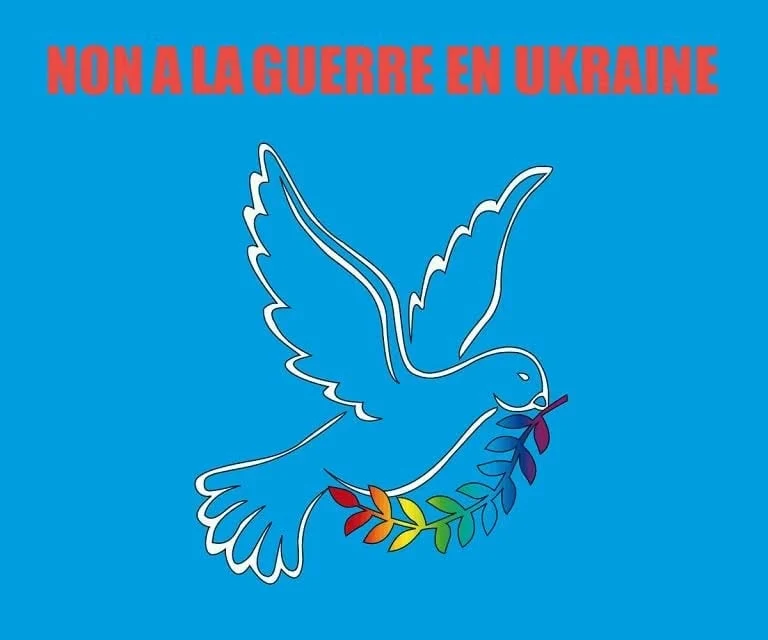

Publication relayée par le PCF 79
Ukraine. La réaction du PCF au début de l’offensive russe
Date de mise à jour indiquée par Facebook · 24 février 2022
Texte de la publication · PCF Monde
#Ukraine : Non à la guerre, la France doit porter urgemment une offre de #paix (#PCF)
Le président russe Vladimir #Poutine a annoncé dans la nuit le début d'une "opération militaire" russe en Ukraine.
Le PCF condamne avec fermeté cette grave décision dont les conséquences peuvent être incontrôlables.
Poutine prend ainsi la responsabilité du déclenchement de la guerre et de l'embrasement de l’ensemble de la région. L'Ukraine vient de décréter la loi martiale.
C'est un échec pour tous car la sécurité de l’Europe, de l’Ukraine et de la #Russie sont indissociables.
Le président russe s'enfonce dans l'ultranationalisme et avec son gouvernement et ses soutiens, il porte la responsabilité militaire - au mépris absolu des instances multilatérales et du droit international - de cette #guerre.
La responsabilité collective revient aussi à tous ceux qui ont nourri le feu de la confrontation aux portes de la Russie en laissant entendre que l’Ukraine pouvait intégrer l’ #OTAN.
Ce désastre pouvait être évité. L'histoire jugera ; dans l'immédiat, il est indispensable de protéger les populations civiles des deux côtés de la ligne de front.
Le PCF s’inquiète du terreau que cette guerre offre aux nationalistes, aux extrémistes de tous bords, en Russie, en Ukraine, en Europe, qui poussent à la guerre, à la haine, à la soif de vengeance.
La France ne peut pas prendre part à ce conflit, ni directement, ni indirectement par l'intermédiaire de livraisons d'armes.
La #France trouvera des appuis en #Europe et dans le monde pour engager sans délai, sous égide de l'ONU, une initiative paneuropéenne extraordinaire, en toute indépendance de l’OTAN et des Etats-Unis, pour remettre toutes les parties autour de la table de négociations.
Il est nécessaire de porter fermement l’offre d’une conférence européenne de coopération et de sécurité collective incluant la Russie, pour parvenir à un règlement politique du conflit sur la base du contenu des Accords de Minsk et des principes de sécurité collective.
Le PCF est solidaire de toutes les forces de paix, en Ukraine, en Russie et en Europe qui se lèvent contre la guerre. Le PCF prendra toute sa place dans les initiatives pour la paix qui pourront être prises dans les prochains jours.
PCF - Parti Communiste Français
Paris, le 24 février 2022

Sources
PCF Monde · publication relayée par le PCF 79 · bibliothèque Facebook · AR-0002-FB-01952
À lire aussi · Journée internationale de la paix. Le texte national dans le relevé